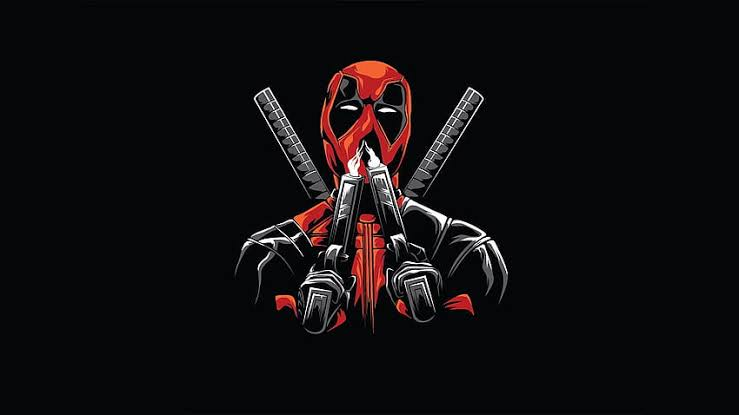
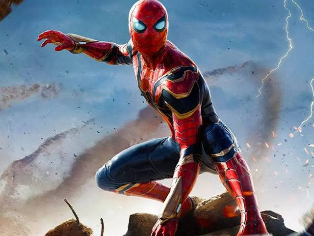
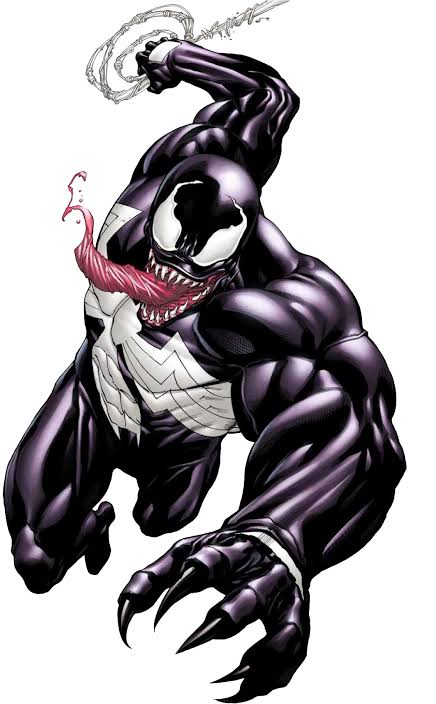
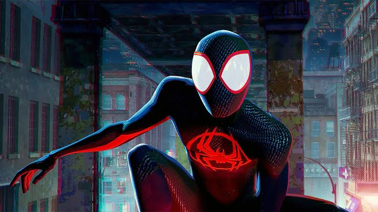
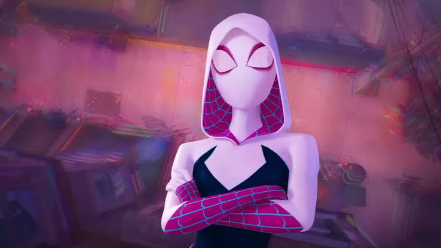

𝔖𝔭𝔦𝔡𝔢𝔯 𝔳𝔢𝔯𝔰𝔢
In the "Spider-Verse" storyline, a villain named Morlun and his family, the Inheritors, hunt and consume the life force of Spider-People across multiple universes. To combat this threat, various Spider-Men and Spider-Women from different dimensions are brought together, including characters like Miles Morales, Spider-Gwen, and Spider-Man Noir. The story explores the challenges of collaboration among these diverse Spider-Heroes as they strive to save their respective universes and thwart the Inheritors' deadly plans
.
𝕯𝖊𝖆𝖉𝖕𝖔𝖔𝖑
Deadpool, created in 1991, is a Marvel Comics character known for his humor and breaking the fourth wall. Wade Wilson, his alter ego, gained a powerful regenerative healing factor through the Weapon X program. Portrayed by Ryan Reynolds in films like "Deadpool" and "Deadpool 2," the character's witty and irreverent nature resonated with audiences. Deadpool's pansexuality in the comics added diversity to superhero representation. With a mercenary background and frequent collaborations with X-Men, Deadpool has become an iconic and unconventional figure in the Marvel universe.
𝕾𝖕𝖎𝖉𝖊𝖗𝖒𝖆𝖓
Spider-Man, created by Stan Lee and Steve Ditko, is a Marvel Comics superhero first appearing in "Amazing Fantasy" #15 in 1962. The alter ego of Peter Parker, Spider-Man gained superpowers from a radioactive spider bite, including wall-crawling and spider-sense. Known for his relatable struggles, Spider-Man has become one of Marvel's most beloved characters. Numerous comic series, animated shows, and film adaptations, including the Tobey Maguire, Andrew Garfield, and Tom Holland portrayals, have contributed to Spider-Man's enduring popularity.
𝖁𝖊𝖓𝖔𝖒
Venom is a Marvel Comics character, first appearing in "The Amazing Spider-Man" #300 in 1988. The symbiote originates from outer space and bonds with journalist Eddie Brock, creating the powerful antihero Venom. Known for his menacing appearance and abilities inherited from Spider-Man, Venom has been both adversary and ally to the wall-crawler. The character's popularity led to various comic series and the 2018 film "Venom," where Tom Hardy portrayed Eddie Brock. Venom's complex dynamic with Spider-Man and his lethal protector persona have contributed to his enduring appeal.
𝕸𝖎𝖑𝖊𝖘 𝖒𝖔𝖗𝖆𝖑𝖊𝖘
Miles Morales is a Marvel Comics character introduced in 2011. Created by writer Brian Michael Bendis and artist Sara Pichelli, Miles is a teenager of African-American and Puerto Rican descent. He gains powers similar to Spider-Man, including camouflage and an electric "venom strike." Miles Morales became Spider-Man in the "Ultimate Fallout" storyline, bringing diversity to the character. He's featured prominently in various comics and the animated film "Spider-Man: Into the Spider-Verse," offering a fresh perspective on the iconic superhero role.
𝕲𝖜𝖊𝖓
"Gwen Spider" likely refers to Gwen Stacy in an alternate universe where she becomes Spider-Woman, also known as Spider-Gwen. In this reality, featured in comics like "Spider-Gwen" and "Into the Spider-Verse," Gwen gets bitten by a radioactive spider instead of Peter Parker. She adopts the superhero identity Spider-Woman, with a distinctive costume and the ability to traverse dimensions. The character has gained popularity for her unique storyline, design, and her role in expanding the Spider-Verse beyond the traditional Spider-Man narrative.
For any assistance please click------>>
𝐈𝐍𝐒𝐓𝐀𝐆𝐑𝐀𝐌